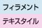
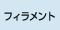
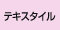
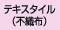
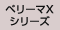
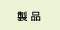

| ブランド | 説明文 |
検索中です…
 |
アクアウェーブ® | 「アクアウェーブ」はＭ型断面ポリエステルフィラメント「アクアウェーブ」を使用した吸水速乾性、ハリ・コシ性、ゆるやかなストレッチ性のある素材です。縫製時の滑脱防止性に優れています。 【検索用キーワード】テキスタイル フィラメント 吸水 速乾 ハリ・コシ 伸縮性 ストレッチ 滑脱防止 |
水分特性すべて 吸水・速乾・通気性 ファッション性すべて 手触り・風合い 伸縮性 取扱い性すべて 滑脱防止 |
|---|---|---|---|
 |
イマージュ® | 「イマージュ」は防透ポリエステルフィラメントです。透け防止性、遮光性、ＵＶカット効果のあるテキスタイルに仕上げることができます。【検索用キーワード】フィラメント 遮光 UVカット 防透 |
光熱特性すべて 遮光・遮熱・UVカット 光熱特性すべて 防透 |
| イレイド® | 「イレイド」は遮熱ポリエステルフィラメントです。赤外線・紫外線反射による遮熱効果・UVカット効果があるテキスタイルに仕上げることができます。【検索用キーワード】フィラメント 遮熱 赤外線反射 UVカット 紫外線遮蔽・紫外線反射 |
光熱特性すべて 遮光・遮熱・UVカット |
|
| ヴェガ® | 「ヴェガ」は細繊度フルダルポリエステルフィラメントです。ドレープ性に優れ、上品な光沢とソフトな風合いを持ち、軽量でコンパクトにまとめられるテキスタイルに仕上げることができます。【検索用キーワード】フィラメント シルキー 光沢 ソフト 軽量 細繊度 |
ファッション性すべて 表面効果 手触り・風合い 軽量・細繊度 |
|
| エスパンディ® | 「エスパンディ」は、 サイドバイサイド型ポリエステルフィラメント(エスパンディ)を使用したストレッチ性に優れたソフトな素材です。【検索用キーワード】フィラメント テキスタイル ソフト 伸縮性 ストレッチ 捲縮糸 クリンプ |
ファッション性すべて 手触り・風合い 伸縮性 |
|
| グラディオ® | 「グラディオ」はPPS（ポリフェニレンサルファイド）から製造されたフィラメントです。耐薬品性、耐加水分解性、耐熱性、絶縁性、難燃性に優れています。【検索用キーワード】フィラメント 絶縁性 難燃 耐薬品性 耐加水分解 耐熱性 |
電気特性すべて 絶縁性 化学特性すべて 難燃 耐薬品性 耐加水分解 耐熱性 |
|
コスモアルファ® |
「コスモアルファ」は、アルカリ溶解割繊型ポリエステルフィラメントです。アルカリ処理後は9分割のポリエステル100％マイクロファイバーになるため、吸水性の高いテキスタイルに仕上げることができます。【検索用キーワード】フィラメント 吸水 割繊 割繊糸 割線糸 |
水分特性すべて 吸水・速乾・通気性 軽量・細繊度 |
|
| シデリア® | 「シデリア」は、ナイロン/ポリウレタン複合潜在捲縮フィラメントです。適度な伸縮性、透明感・さらさら感を持ち合わせています。【検索用キーワード】フィラメント 透明性 透明感 伸縮性 ストレッチ 捲縮糸 クリンプ |
ファッション性すべて 表面効果 伸縮性 |
|
| シルクール® | 「シルクール」は赤外線・紫外線反射機能を持つ遮光ポリエステル加工糸です。遮熱・ＵＶカット効果のあるドレープ性をもったテキスタイルに仕上げることが可能です。【検索用キーワード】フィラメント 遮光 遮熱 赤外線反射 UVカット 紫外線遮蔽 紫外線反射 |
光熱特性すべて 遮光・遮熱・UVカット |
|
| ゼクシオン® | 「ゼクシオン」はLCP（液晶ポリエステル）を使用した、高強度・高弾性フィラメントです。低線膨張率・耐熱性・耐酸性・耐切創性・振動減衰性・低誘電性に非常に優れています。【検索用キーワード】フィラメント 低誘電 耐酸性 耐熱性 高強度 高弾性 振動減衰 低線膨張 耐切創性 細繊度 |
電気特性すべて 低誘電 化学特性すべて 耐薬品性 耐熱性 物理特性すべて 高強度 高弾性 振動減衰 低線膨張 耐切創性 軽量・細繊度 |
|
ソアフル® |
「ソアフル」は、異収縮混繊ポリエステルフィラメント(ソアフル)を使用し、適度なふくらみ感とドレープ性、なめらかな風合いを実現した上品な光沢をもつテキスタイルです。【検索用キーワード】フィラメント テキスタイル シルキー 光沢 スパンライク・ふくらみ 異収縮 異収縮混繊 細物ハイマルチ |
ファッション性すべて 表面効果 手触り・風合い 伸縮性 軽量・細繊度 |
|
| ソアリオン®Y | 「ソアリオンY」は、吸水速乾性、軽量性を有するＹ型断面ポリエステルフィラメントです。ソフトでサラッとした肌ざわり、ハリ・コシのある風合いのテキスタイルを実現できます。【検索用キーワード】吸水 速乾 拡散 ハリ・コシ スパンライク・ふくらみ ソフト 軽量 |
水分特性すべて 吸水・速乾・通気性 光耐 ファッション性すべて 手触り・風合い 軽量・細繊度 |
|
| ソアリオン®YC | 「ソアリオンＹＣ」は、吸水速乾ポリエステルフィラメント「ソアリオンY」にＵＶカットと接触冷感性を付与したポリエステルフィラメントです。ソフトでサラッとした肌ざわり、ハリ・コシのある風合いのテキスタイルを実現できます。【検索用キーワード】吸水 速乾 拡散 UVカット 紫外線遮蔽 紫外線反射 冷感 接触冷感 ハリ・コシ スパンライク・ふくらみ ソフト 軽量 |
水分特性すべて 吸水・速乾・通気性 光耐 光熱特性すべて 遮光・遮熱・UVカット 冷感 ファッション性すべて 手触り・風合い 軽量・細繊度 |
|
| ソアリス®P | 「ソアリスP」は、静電気抑制制電ポリエステルフィラメントです。まとわりつきやパチパチ感、ほこりの付着を軽減しソフトな風合いのテキスタイルを実現します。【検索用キーワード】フィラメント 制電 静電気抑制 ソフト |
電気特性すべて 導電・制電 ファッション性すべて 手触り・風合い |
|
| ビバン® | 「ビバン」はU断面のシックアンドシンポリエステルフィラメントです。その断面形状から吸水・速乾性に優れ、ふくらみ感、ハリ・コシ感、ドライ感、ナチュラル感のあるテキスタイルに仕上げることが可能です。【検索用キーワード】フィラメント 吸水 速乾 ドライ シックアンドシン ナチュラル感 ハリ・コシ スパンライク・ふくらみ |
水分特性すべて 吸水・速乾・通気性 ファッション性すべて 表面効果 手触り・風合い |
|
| フレサーモ® | 「フレサーモ」は、赤外線吸収ポリエステル蓄熱フィラメントです。特殊機能剤が赤外線を吸収し、熱変換することで発熱する効果を促進します。【検索用キーワード】フィラメント 蓄熱 熱変換 発熱 赤外線吸収 |
光熱特性すべて 蓄熱・保温 |
|
| ベリーマ® | 「ベリーマ」はナイロン/ポリエステル分割型複合フィラメントであり、割繊後はナイロン1本ポリエステル4本に5分割されたマイクロファイバーになります。天然繊維との交織交編素材から、ワイピングクロスなど幅広い展開が可能です。細繊度によりやわらかな風合いが得られます。【検索用キーワード】フィラメント 細繊度 割繊 割繊糸 割線糸 マイクロファイバー |
軽量・細繊度 | |
| ベリーマ®X | 「ベリーマＸ」はナイロン/ポリエステル分割型複合フィラメントであり、割繊後はナイロン1本、クサビ状ポリエステル8本に９分割され、5分割の「ベリーマ」より更に細いマイクロファイバーになります。衣料用途から産業資材まで幅広い展開が可能です。 細繊度によりやわらかな風合いが得られます。【検索用キーワード】フィラメント 割繊 割繊糸 マイクロファイバー 割線糸 細繊度 |
軽量・細繊度 | |
| ベルカップル® | 「ベルカップル」は、芯鞘型熱融着ポリエステルフィラメント（ベルカップル）を使用したヒートシール性（目ズレ防止）、 形態安定性、硬度調整性に優れた無溶媒で熱接着させることができる素材です。 【検索用キーワード】テキスタイル フィラメント 熱融着 保形性・形態安定性 熱接着 無溶媒 |
取扱い性すべて 熱融着 |
|
| ベルスクェア® | 「ベルスクェア」は特殊扁平ポリエステルフィラメントです。光透過性があるため、透明感と美しい光沢、ミラー効果のあるテキスタイルに仕上げることができます。【検索用キーワード】フィラメント 光透過性 光沢 透明性 透明感 |
光熱特性すべて 光透過性 ファッション性すべて 表面効果 |
|
| ベルトロン® | 「ベルトロン」は、高性能導電性フィラメントです。どのような環境下でも帯電防止効果を発揮します。少量混合で充分な効果が得られます。 多様な用途に対応できるようにバリエーション多く取り揃えております。【検索用キーワード】フィラメント 導電 帯電防止 静電気 |
電気特性すべて 導電・制電 |
|
| ベルピュア® | 「ベルピュア」はアルカリ易溶ポリエステルフィラメントです。アルカリ溶解速度がレギュラーポリエステルより格段に速いフィラメントです。【検索用キーワード】フィラメント 易溶解性 アルカリ易溶 |
取扱い性すべて 易溶解性 |
|
モエセーブ® |
「モエセーブ」は、非ハロゲン系の素材難燃フィラメント(モエセーブ)を使用した、燃えにくく、燃え広がりにくい自己消火性を備えたポリエステル素材です。【検索用キーワード】テキスタイル フィラメント 難燃 自己消化性 |
化学特性すべて 難燃 |
|
| モス® | 「モス」は、特殊ループ構造を持つ異収縮混繊フィラメントです。光沢のあるソフトでふくらみ豊かなテキスタイルに仕上がります。【検索用キーワード】フィラメント 光沢、中肉・厚地、スパンライク・ふくらみ、ソフト、異収縮 異収縮混繊 |
ファッション性すべて 表面効果 手触り・風合い 伸縮性 |
|
| モノフィラメント | KBセーレンのモノフィラメントは、細繊度で高強度が特徴の芯鞘構造フィラメントです。目ズレがしにくいタイプ、インクとの馴染みが良いタイプがあり、スクリーンメッシュやフィルター等に最適です。黄原着タイプもあります。【検索用キーワード】フィラメント 高強度 モノフィラメント 細繊度 |
物理特性すべて 高強度 モノフィラメント 軽量・細繊度 |
|
| モンターナ® | 「モンターナ」はポリマーの異なるフィラメントを混繊したポリエステルフィラメントです。整った杢調・メランジを表現でき 、フルダル糸ならではの上品な艶も得られます。【検索用キーワード】フィラメント メランジ 杢調 |
ファッション性すべて 表面効果 |
|
| ライトロン® | 「ライトロン」はブライト中空三角断面ポリエステルフィラメントです。その構造から、軽量、保温性が得られるほか、独特な光沢感のあるテキスタイルに仕上げることができます。【検索用キーワード】フィラメント 保温 光沢 軽量 中空 |
光熱特性すべて 蓄熱・保温 ファッション性すべて 表面効果 軽量・細繊度 |
|
| リブフレッシュ® Pスーパー |
「リブフレッシュPスーパー」は、抗菌ポリエステルフィラメント(リブフレッシュPスーパー)を使用した抗菌防臭、制菌性能に優れた素材です。SEKマークの基準である抗菌防臭加工及び制菌加工（一般用途・特定用途）に対応しています。【検索用キーワード】テキスタイル フィラメント 抗菌防臭 制菌 |
衛生特性すべて 抗菌・防臭 制菌 |
|
| ルシーナ® | 「ルシーナ」はカチオン可染ポリエステルフィラメントです。レギュラーポリエステルに比べ優れた発色性、高い洗濯堅牢度を持ち合わせています。常圧染色により、染色時の熱量やCO2排出量削減が可能です。【検索用キーワード】フィラメント 常圧染色 カチオン可染 発色性 易染 |
取扱い性すべて 易染 |
|
| ルシーナ®U | 「ルシーナU」は、吸水速乾機能のあるカチオン可染ポリエステルフィラメントです。レギュラーポリエステルに比べすぐれた発色性、高い洗濯堅牢度を持ち合わせています。常圧染色により、工程時の熱量やCO2排出量削減が可能です。【検索用キーワード】フィラメント 吸水 速乾 常圧染色 カチオン可染 発色性 易染 |
水分特性すべて 吸水・速乾・通気性 取扱い性すべて 易染 |
|
| レジエール® | 「レジエール」は、異なる2種類の糸を混繊した異収縮混繊フィラメント(レジエール)を使用した豊かなふくらみ感を持った素材です。【検索用キーワード】テキスタイル フィラメント 中肉・厚地 スパンライク ふくらみ 異収縮 異収縮混繊 |
ファッション性すべて 手触り・風合い 伸縮性 |
|
 |
アクアステルス® | 「アクアステルス」は、ドライタッチと軽量、シャリ感のある着心地を実現できます。Y型断面ポリエステルフィラメント「ソアリオンY」の使用により吸水・拡散性があり、さわやかな肌ざわりが持続します。適度なハリ・コシやカサ高感のあるテキスタイルです。【検索用キーワード】テキスタイル 吸水 速乾 ドライ 拡散 ハリ・コシ カサ高 シャリ感 軽量 |
水分特性すべて 吸水・速乾・通気性 ファッション性すべて 手触り・風合い 軽量・細繊度 |
| イオヴェール® | 「イオヴェール」は赤外線透過防止テキスタイルです。赤外線カメラでの透撮を困難にします。【検索用キーワード】テキスタイル 赤外線吸収 透撮 赤外線透過防止 |
光熱特性すべて 防透 |
|
 |
エスパンシオーネ® | 「エスパンシオーネ」はポリウレタン100％の伸縮性不織布です。 従来の不織布の特性である通気性（衛生）・透湿性やハンドリング性に加え、高い伸縮性さらには低発塵性など多くの優れた特性を有しています。【検索用キーワード】テキスタイル 不織布 透湿 通気性 滑り止め 伸縮性 ストレッチ 回復性 低発塵 |
水分特性すべて 透湿・防水・撥水・防風 衛生特性すべて 通気性(衛生) ファッション性すべて 手触り・風合い 伸縮性 取扱い性すべて 低発塵 |
| エスパンシオーネ®FF | 「エスパンシオーネFF」は無溶媒の熱接着性ポリウレタン不織布です。素材の風合いを損なわず、伸縮性・通気性（衛生）を維持し多種多様な素材との接着が可能です。【検索用キーワード】テキスタイル 透湿 通気性 伸縮性 ストレッチ 熱接着 無溶媒 熱融着 |
水分特性すべて 透湿・防水・撥水・防風 衛生特性すべて 通気性(衛生) ファッション性すべて 伸縮性 取扱い性すべて 熱融着 |
|
| オージェ® | 「オージェ」は裏地用静電気防止ポリエステルテキスタイルです。導電糸を目立ちにくくしたきれいな表面感の裏地です。後加工ではないため、洗濯耐久性にも優れています。【検索用キーワード】テキスタイル 導電 静電気防止 |
電気特性すべて 導電・制電 |
|
| 軽密® | 「軽密」は細繊度フルダルポリエステルフィラメントである「ヴェガ」を使用し、軽量化を実現した高密度ポリエステル織物です。透湿性や防風・撥水性能も備え、独特な光沢感、ドレープ性があり、風合いが非常にソフトで着用感も快適です。【検索用キーワード】テキスタイル 透湿 撥水 防風 光沢 ソフト 軽量 高密度 ハイゲージ 細物ハイマルチ |
水分特性すべて 透湿・防水・撥水・防風 ファッション性すべて 表面効果 手触り・風合い 軽量・細繊度 |
|
軽密®ニット |
「軽密ニット」は細繊度フルダルポリエステルフィラメントである「ヴェガR」を使用し、驚異の軽量化を実現した高密度ポリエステルニットです。風合いが非常にソフトでドレープ性に優れ、着用感も快適です。【検索用キーワード】テキスタイル ソフト 軽量 高密度 ハイゲージ 細物ハイマルチ |
ファッション性すべて 手触り・風合い 軽量・細繊度 |
|
| シエスタ® | 「シエスタ」は、特殊意匠ランダム構造フィラメントを使用し適度なシャリ感とふくらみを備え多彩な手触り・風合を表現できます。ナチュラル感のあるソフトな風合い、一味違ったタッチ感、優れた吸水性・拡散性・通気性を兼ね備えたテキスタイルです。【検索用キーワード】テキスタイル 吸水 ドライ 拡散 通気性 ナチュラル感 スパンライク・ふくらみ ソフト シャリ感 |
水分特性すべて 吸水・速乾・通気性 ファッション性すべて 手触り・風合い |
|
| シャダン® | 「シャダン」は遮熱ポリエステルフィラメント「イレイド」を使用した、遮熱効果、UVカット効果のあるテキスタイルです。衣服内や室内温度の上昇を抑えるため、冷房効率UPに役立つ、省エネ素材です。【検索用キーワード】テキスタイル 遮熱 省エネ 赤外線反射 UVカット 紫外線遮蔽 紫外線反射 |
光熱特性すべて 遮光・遮熱・UVカット |
|
| ドーデン® | 「ドーデン」は導電性フィラメント「ベルトロン」とポリエステルを交編・交織した静電気防止テキスタイルです。繊維上や人体への帯電防止に役立ちます。【検索用キーワード】テキスタイル 導電 静電気防止 帯電防止 |
電気特性すべて 導電・制電 |
|
| フィールサーモ® | 「フィールサーモ」は、赤外線吸収ポリエステル蓄熱フィラメント「フレサーモR」を使用したテキスタイルです。赤外線を吸収し熱変換する効果を促進します。【検索用キーワード】テキスタイル 蓄熱 熱変換 発熱 赤外線吸収 |
光熱特性すべて 蓄熱・保温 |
|
| ベルキュア®AS | 「ベルキュアAS」は消臭加工ポリエステルテキスタイルです。繊維が臭気成分と触れることにより不快臭を減少させます。【検索用キーワード】テキスタイル 消臭 |
衛生特性すべて 消臭 |
|
ホワイエ® |
「ホワイエ」は、防透フィラメント「イマージュ」を使用したテキスタイルです。光を透過しにくく、防透効果があり、紫外線遮蔽によるUVカット効果があります。【検索用キーワード】テキスタイル UVカット 紫外線遮蔽 紫外線反射 防透 |
光熱特性すべて 遮光・遮熱・UVカット 光熱特性すべて 防透 |
|
| メルテクト® | 「メルテクト」は摩擦熱による溶融を軽減する防融テキスタイルです。スポーツ衣料など摩擦熱による素材の傷みを防ぎます。【検索用キーワード】テキスタイル 防融 |
光熱特性すべて 防融 |
|
| ルザス® | 「ルザス」は細繊度フルダルポリエステルフィラメント「ヴェガ」を使用した透湿・撥水・防風効果のあるテキスタイルです。薄くて軽量、ソフトな風合いのテキスタイルです。【検索用キーワード】テキスタイル 透湿 撥水 防風 ナチュラル感 ソフト 軽量 細物ハイマルチ |
水分特性すべて 透湿・防水・撥水・防風 ファッション性すべて 手触り・風合い 軽量・細繊度 |
|
 |
ベリーマ®Xシリーズ | 「ベリーマＸシリーズ」はマイクロファイバーである、ナイロン/ポリエステル分割型複合フィラメント「ベリーマＸ」を使用したテキスタイル群です。高密度で透湿・防水性にもすぐれています。商品によっては、拭き取り性能においても優れた効果を発揮し、衣料用途から工業用途まで幅広い展開ができます。【検索用キーワード】透湿 防水 高密度 拭き取り性 マイクロファイバー 細繊度 |
軽量・細繊度 |
| ザヴィーナ® ワイピングクロス |
「ザヴィーナワイピングクロス」はマイクロファイバーである、ナイロン／ポリエステル分割型複合フィラメント「ベリーマＸ」を使用したニットタイプのワイピングクロスです。 拭き取り性がよく、低発塵、吸水性に優れ、クリーンルーム対応も可能です。ハンカチタイプ、テープタイプがあり、原糸生産から最終製品の梱包まで自社で一貫生産しております。【検索用キーワード】吸水 低発塵 拭き取り性 マイクロファイバー ベリーマXシリーズ 工業用途 |
水分特性すべて 吸水・速乾・通気性 取扱い性すべて 低発塵 ベリーマXシリーズすべて 工業用途 |
|
| ザヴィーナ® ピーチスキン® |
「ザヴィーナピーチスキン」はマイクロファイバー「ベリーマＸ」を使用し、高収縮高密度加工した、透湿防水性に優れた、ソフトで桃の表面を思わせる繊細な立毛による独特の感触のテキスタイルです。【検索用キーワード】透湿 防水 起毛・立毛 ソフト 高密度 ハイゲージ マイクロファイバー ベリーマXシリーズ |
水分特性すべて 透湿・防水・撥水・防風 ファッション性すべて 表面効果 手触り・風合い ベリーマXシリーズすべて 衣料・資材用途 |
|
| テクノアート® | 「テクノアート」はマイクロファイバー「ベリーマ」・「ベリーマＸ」とナイロンフィラメントを組み合わせた特殊高密度テキスタイルです。 高収縮高密度加工により防風性と透湿防水性があります。【検索用キーワード】透湿 防水 防風 ソフト 高密度 ハイゲージ マイクロファイバー ベリーマXシリーズ |
水分特性すべて 透湿・防水・撥水・防風 ファッション性すべて 手触り・風合い ベリーマXシリーズすべて 衣料・資材用途 |
|
| テクノフィット® | 「テクノフィット」はマイクロファイバー「ベリーマ」・「ベリーマＸ」を使用した緻密な織編物です。 高収縮高密度加工により、ソフトな風合いでドレープ性と透湿防水性があります。サンディング加工の条件によりスエード調の表面効果も実現可能です。【検索用キーワード】透湿 防水 スエード調 ナチュラル感 ソフト 高密度 ハイゲージ マイクロファイバー ベリーマXシリーズ |
水分特性すべて 透湿・防水・撥水・防風 ファッション性すべて 表面効果 手触り・風合い ベリーマXシリーズすべて 衣料・資材用途 |
|
| ベストレッチ® | 「ベストレッチ」はマイクロファイバー「ベリーマＸ」と各種ストレッチフィラメントを組み合わせた高密度のストレッチタイプテキスタイルです。優れたドレープ性と撥水性を備え、快適な着心地を追求したテキスタイルです。【検索用キーワード】撥水 スパンライク・ふくらみ ソフト 伸縮性 ストレッチ 高密度 ハイゲージ マイクロファイバー ベリーマXシリーズ |
水分特性すべて 透湿・防水・撥水・防風 ファッション性すべて 手触り・風合い 伸縮性 ベリーマXシリーズすべて 衣料・資材用途 |
|
| ベルスプリット® | 「ベルスプリット」はマイクロファイバー「ベリーマＸ」を使用した超高収縮織物です。独特のハリ・コシ、きめ細かな風合い、優れた透湿防水性と通気性をもつテキスタイルです。【検索用キーワード】通気性 透湿 防水 ハリ・コシ マイクロファイバー 高密度 ハイゲージ ベリーマXシリーズ |
水分特性すべて 吸水・速乾・通気性 透湿・防水・撥水・防風 ファッション性すべて 手触り・風合い ベリーマXシリーズすべて 衣料・資材用途 |
|
| ベルセイム® | 「ベルセイム」はマイクロファイバー「ベリーマＸ」を使用したニットであり、ソフトな風合い、優れたドレープ性があります。立毛の繊細さから、天然スエード調の表面感が生まれ、中肉で保温性・耐摩耗性に優れています。【検索用キーワード】保温 起毛・立毛 スエード調 中肉・厚地 ソフト マイクロファイバー 高密度 ハイゲージ ベリーマXシリーズ |
光熱特性すべて 蓄熱・保温 ファッション性すべて 表面効果 手触り・風合い ベリーマXシリーズすべて 衣料・資材用途 |
|
| ベルセタ® | 「ベルセタ」は経糸にマイクロファイバー「ベリーマＸ」、緯糸に特殊糸を使用し、独自の加工に光沢やしわなどの加工を加えたテキスタイルです。 高収縮高密度テキスタイルですので、透湿防水効果があります。【検索用キーワード】透湿 防水 光沢 ソフト 高密度 ハイゲージ マイクロファイバー ベリーマXシリーズ |
水分特性すべて 透湿・防水・撥水・防風 ファッション性すべて 表面効果 手触り・風合い ベリーマXシリーズすべて 衣料・資材用途 |
|
 |
そうじの神様® | 「そうじの神様」は、おそうじ用品の総称です。原糸メーカーだから作れる素材にこだわった製品です。リビング、台所、お風呂、電気製品から車まで色々な場面で使用できるグッズを各種取り揃えています。【検索用キーワード】製品 |
製品 |
| フレシェリー® | 「フレシェリー」は使用者が快適に使用できる衣料雑貨製品の総称です。 |
製品 | |
| ベルエンジェル® | 「ベルエンジェル」は便利グッズの総称です。 |
製品 |
上の「機能・特性を選択して検索」または「キーワードで検索」で、検索してください。